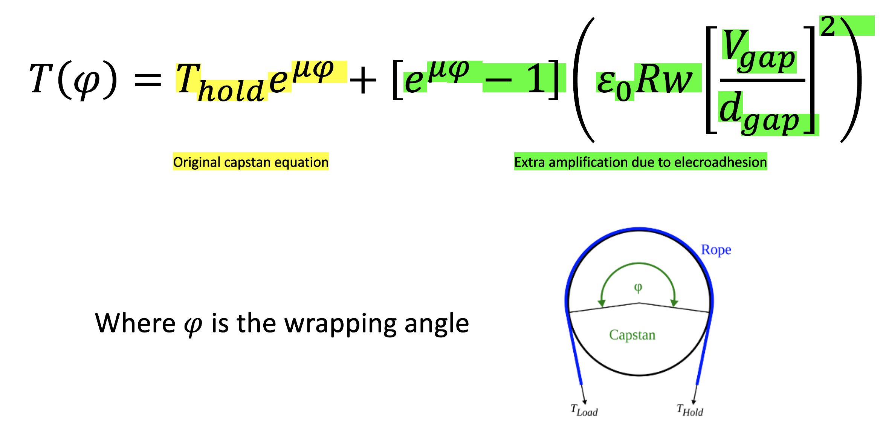
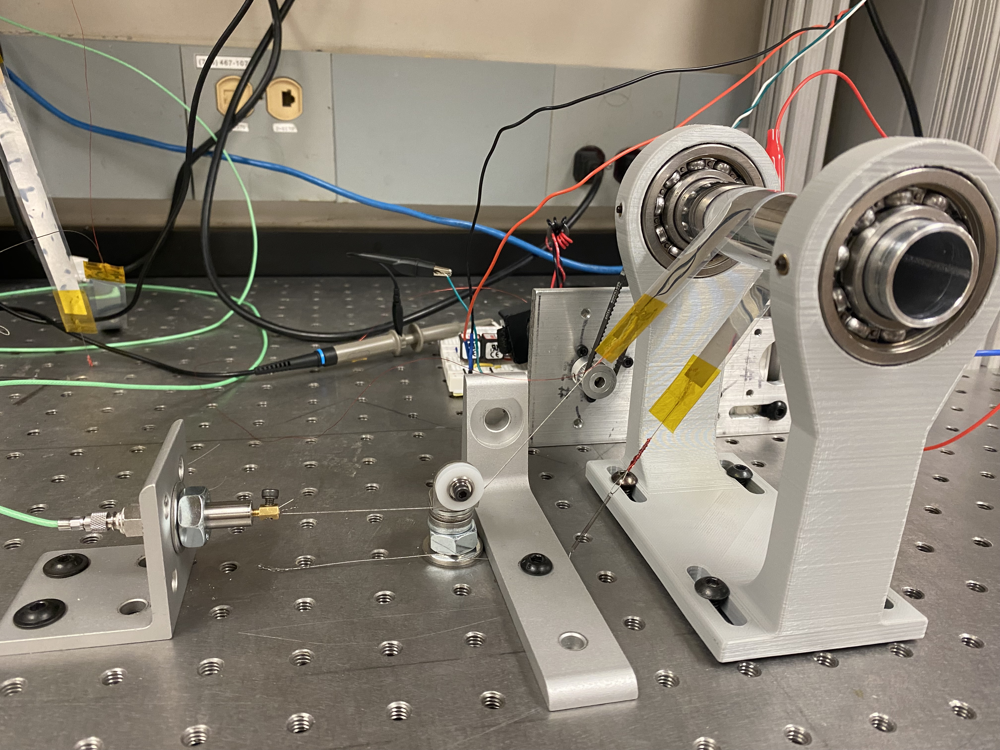
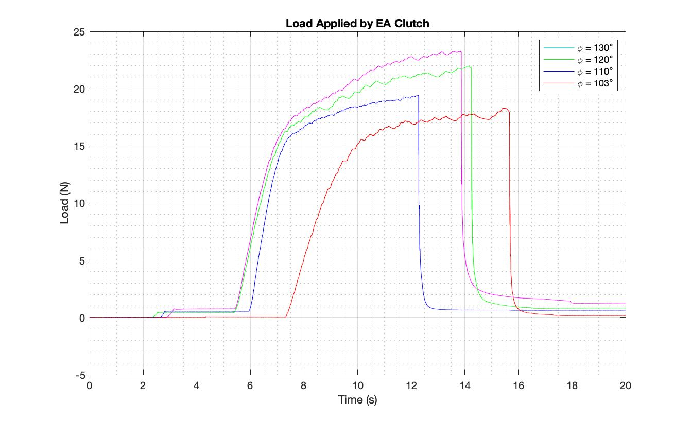
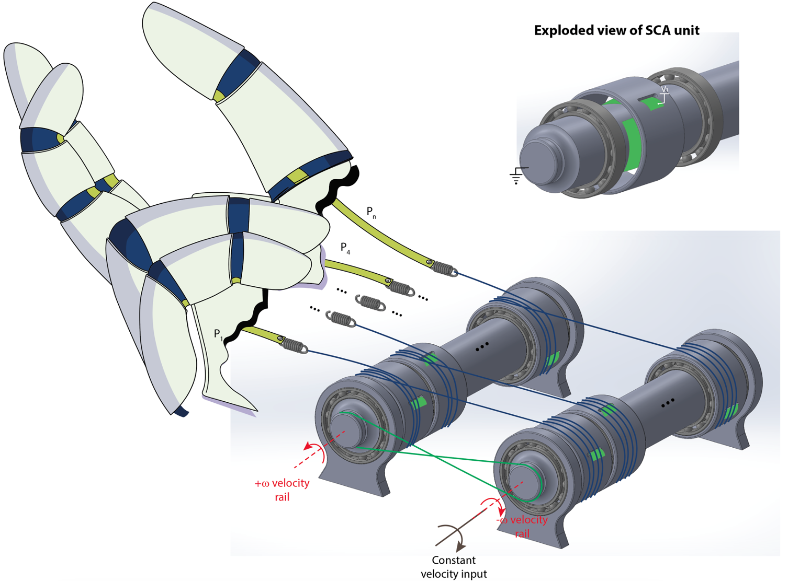

Electroadhesive Capstan
Thesis project: Center for Robotics and Biotechnology
The Capstan Effect
My thesis project circulated around understanding the capstan effect and the combination of that with electroadhesive clutches. The application of this research is high force, high displacement actuators for use in robotics.
First, I wanted to understand the theory behind the capstan effect and how adding electroadhesion plays a role in increasing the amount of force I can actuate. I built a static model and derived a new capstan equation from it. That new equation is seen to the right.



Experimentation
Next, I needed to test to see if my equation held any validity in real life. I designed a testing rig (left) to test the pulling force for different angles of an electroadhesive capstan. I manufactured a low-friction setup that rotated a polished aluminum rod and designed flexible clutches that could be actuated at high voltages. In doing so, I built a circuit that outputted a square wave that could modulate electroadhesion between -200V and +200V. Additionally, I utilized a load cell to read the pulling force that the clutch was able to amplify.
In creating this setup, I used my skills in circuity, machining, mechatronics, 3-D printing, to create a mechanical setup. It also required skills in Python, and MATLAB to be able to program and gather data.
I ran multiple trials at different angles to gather data on the extra amplification that electroadhesion offers the capstan effect. The shape of the graph (left) reflects the equation I derived.
Implementation
The use of the capstan effect would not be useful if it could not be put into practice. So, I designed a load transfer device to visualize how this could be effective in situations that require a high force, high displacement actuator.
